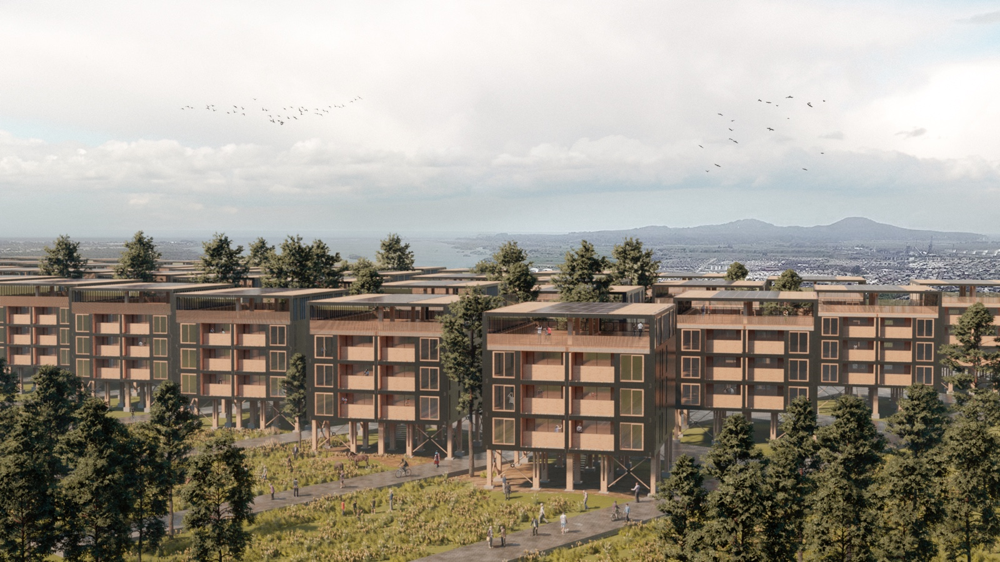

Diseño de viviendas
Proyectos de casas nuevas, desde la distribución inicial hasta el desarrollo de planos arquitectónicos.
ARQUITECTURA · DISEÑO · INNOVACIÓN
Soy Javiera Ruiz Soto, arquitecta interesada en crear espacios con identidad y explorar nuevas formas de diseñar a través de los materiales, la tecnología y la sostenibilidad.

SELECCIÓN DE PROYECTOS
Una selección de trabajos, exploraciones y procesos de diseño.
ARQUITECTURA
Agrega aquí una breve descripción del proyecto, su concepto y las decisiones de diseño.
DISEÑO INTERIOR
Presenta el uso de la luz, los materiales y la distribución para construir una atmósfera.
VISUALIZACIÓN 3D
Incluye renders, imágenes de proceso o modelos que comuniquen tus ideas con claridad.
Las fichas son plantillas de ejemplo; puedes reemplazarlas por tus proyectos e imágenes reales.
SERVICIOS PROFESIONALES
Te acompaño desde la idea inicial hasta el desarrollo del proyecto y sus gestiones, con una mirada cercana, responsable y atenta a los detalles.
DISEÑO DE ESPACIOS Y VIVIENDAS
Diseño y desarrollo de propuestas arquitectónicas que combinan funcionalidad, estética y comodidad, adaptadas a tus necesidades y al entorno.
Proyectos de casas nuevas, desde la distribución inicial hasta el desarrollo de planos arquitectónicos.
Renovación y organización de espacios para aprovechar cada ambiente y crear lugares acogedores.
Cocinas funcionales, considerando mobiliario, almacenamiento, materiales e iluminación.
Espacios para compartir, disfrutar y conectar la vivienda con el exterior.
Diseño de dormitorios, baños, home office y otros ambientes.
REGULARIZA TU PROPIEDAD
¿Construiste una ampliación? ¿Tu vivienda no cuenta con permiso de edificación o recepción definitiva? Revisamos tu situación para identificar qué alternativas existen ante la Dirección de Obras Municipales (DOM).


Procedimiento simplificado para determinadas viviendas que cumplen los requisitos de la Ley 20.898.
Estudio de construcciones que no pueden acogerse a la Ley del Mono y que requieren revisión según la Ley General de Urbanismo y Construcciones (LGUC) y su Ordenanza (OGUC).
¿Agregaste habitaciones, cerraste una terraza o ampliaste tu vivienda?
Asesoría para revisar construcciones destinadas a actividades comerciales o de servicios.
PERMISOS Y TRÁMITES MUNICIPALES
Apoyo profesional para preparar, presentar y realizar seguimiento a solicitudes relacionadas con proyectos y propiedades ante los organismos competentes.


Orientación y preparación de antecedentes para solicitar autorización municipal antes de construir.
Apoyo en la preparación de documentación para solicitar la recepción definitiva de una construcción ejecutada.
Ingreso y seguimiento de expedientes, revisión de observaciones y presentación de antecedentes complementarios.
Identificación de requisitos y orientación sobre gestiones municipales que necesita tu propiedad.
ESTUDIOS Y FACTIBILIDAD DE TERRENOS
Revisión de antecedentes técnicos y territoriales para identificar condiciones, restricciones y posibilidades de desarrollo de un proyecto.


Revisión de antecedentes para evaluar las condiciones del terreno y las posibilidades de desarrollar una construcción, según el procedimiento aplicable.
Asesoría y apoyo en la revisión de antecedentes necesarios para gestionar un Informe Previo Favorable, según corresponda.
02 / INVESTIGACIÓN Y DESARROLLO
Me interesa explorar el potencial de los materiales y transformar ideas en soluciones con propósito. Este espacio está dedicado a iniciativas de innovación, sostenibilidad y experimentación.
Hablemos de innovaciónSOBRE MÍ
Soy Javiera Ruiz Soto, arquitecta. Mi trabajo cruza el diseño de espacios con la representación visual y la búsqueda de nuevas posibilidades materiales.
Creo en una arquitectura que escucha su contexto, comunica ideas con claridad y considera el impacto de sus decisiones. Aquí reúno proyectos, aprendizajes e iniciativas que representan esa mirada.
HABILIDADES
JRS / HABLEMOS
Cada proyecto comienza de una manera distinta. A veces con una necesidad, otras con una idea o simplemente con algo que sabemos que podría ser mejor.
Me gustaría conocer lo que tienes en mente y conversar sobre cómo podemos desarrollarlo.
arquitecta.javieraruizs@gmail.com LinkedIn